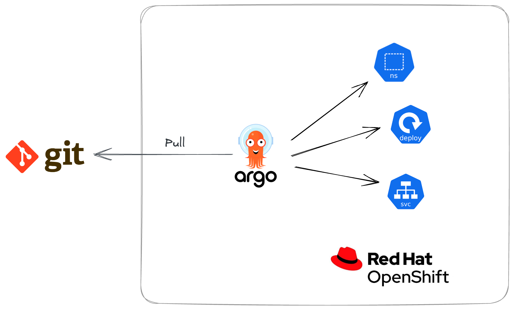

Red Hat Summit 2023: GitOps Workshop Overview Welcome to Red Hat Summit 2023, and the Using GitOps to Control and Customize your Red Hat OpenShift Clusters and Applications workshop! This workshop provides you with your own Red Hat OpenShift cluster, and set of exercises that teach you how to use Red Hat OpenShift GitOps to manage aspects of your Red Hat OpenShift cluster and containerised applications. By the end of this workshop you will know how to: Access the Red Hat OpenShift GitOps (Argo CD) Dashboard on a Red Hat OpenShift cluster. Customise the OpenShift Web Console using GitOps. Manage Namespaces, Resource Quotas, and RBAC using GitOps. Keep configurations in a desired state using GitOps. Enable teams to leverage GitOps to deploy their applications. Use the the "App of Apps" pattern to bootstrap a cluster using GitOps. Continuously Deliver a containerised application using GitOps. What is OpenShift? Red Hat OpenShift brings together tested and trusted services to reduce the friction of developing, modernizing, deploying, running, and managing applications. Built on Kubernetes, it delivers a consistent experience across public cloud, on-premise, hybrid cloud, or edge architecture. What is GitOps GitOps is a declarative way to implement continuous deployment for cloud native applications. You can use GitOps to create repeatable processes for managing OpenShift clusters and applications across multi-cluster Kubernetes environments. GitOps handles and automates complex deployments at a fast pace, saving time during deployment and release cycles. What is Red OpenShift GitOps Red Hat OpenShift GitOps is built on Argo CD. Argo CD is an open-source tool that enables the continuous delivery of applications. Put simply, when using Argo CD you store and manage your configurations using Git repositories and the resources in those repositories are synchronised to your OpenShift/Kubernetes clusters by Argo CD.  Red Hat OpenShift GitOps implements Argo CD as a controller so that it continuously monitors application definitions and configurations defined in a Git repository. Then, Argo CD compares the specified state of these configurations with their live state on the cluster. Argo CD reports any configurations that deviate from their specified state. These reports allow administrators to automatically or manually resync configurations to the defined state. Therefore, Argo CD enables you to deliver global custom resources, like the resources that are used to configure OpenShift clusters. Setup